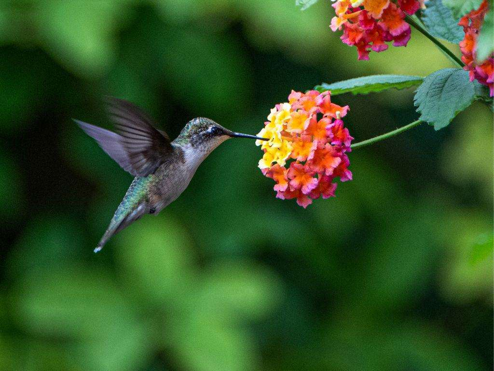

Travel
London


Geographical Location: London, United Kingdom
- As one of the most iconic cities in the world, London carries a rich history that is matched by its continuous growth and evolution. A powerhouse of culture, politics, and finance, it stands as a city where the past and present exist harmoniously side by side. From the ancient towers that narrate tales of a regal past to modern architectural marvels that reach for the skies, London offers an unrivaled blend of history and modernity.
- Here the Big Ben is depicted along side london's bridge. The beautiful scenary of the city makes capturing such an image so unique. The Big Ben is a giant clock tower located in London and is one of its many tourist attractions.
Photo Gallery

There is so much diverse art here.

Beatuiful arches in this museum.
Big Ben stands tall as a testament to London's historical grandeur, its chimes echoing tales of times gone by.
Chiangmai, Thailand


Geographical Location: Asia
- 1. Chiang Mai, nestled in the lush hills of northern Thailand, is a city that captivates with its unique blend of cultural richness and natural beauty. Situated approximately 700 kilometers north of Bangkok, Chiang Mai is the largest city in the region and serves as the capital of the province of the same name. Its geographical location is nothing short of enchanting, surrounded by forested mountains and picturesque landscapes. This charming city, often referred to as the "Rose of the North," offers visitors a delightful escape from the bustling urban life, inviting them to explore a realm where tradition meets modernity amidst a backdrop of stunning scenery.
- 2. The heart of Chiang Mai beats with a rich history that dates back over 700 years. Founded in 1296, the city was originally the capital of the ancient Lanna Kingdom. Today, remnants of its storied past are scattered throughout the city, from the ancient temples that dot the landscape to the preserved city walls and moats that harken back to a bygone era. Among the city's treasures is the revered Wat Phra Singh, a 14th-century temple known for its intricate architecture and revered Buddha image. Chiang Mai's historical sites provide a captivating glimpse into its heritage, making it a destination that seamlessly weaves together the past and present for visitors to explore and appreciate.
Photo Gallery

There are so many beautiful temples in Chiang Mai.

Be respectful to the monks.

And do not forget to treat yourself with delicious Thai food!
Monteverde, Costa Rica


Geographical Location: South America
- 1. Monteverde, Costa Rica is situated 4,662 feet above sea level. Monteverde’s famed cloud forests are the byproduct of fog (a thick, low-hanging cloud) tangling amongst the leaves and branches of the forest canopy. Trails and hanging bridges offer a close-up view of the diverse variety of animals and plants living in the forest.
- 2. One of the main tourist locations in Monteverde is the town of Santa Elena, which is not only home to a variety of restaurants with delicious food, but a serpentarium as well. You can enjoy hiking, ziplining, and observing the native wildlife while staying in Monteverde.
Photo Gallery

You can hike trails and zipline through the Monteverde cloud forests.

Hanging bridges over the cloud forests allow for a birds-eye view.
You can visit hummingbirds at Monteverde’s Selvatura Park’s hummingbird garden, which exhibits over 14 different species of hummingbird.